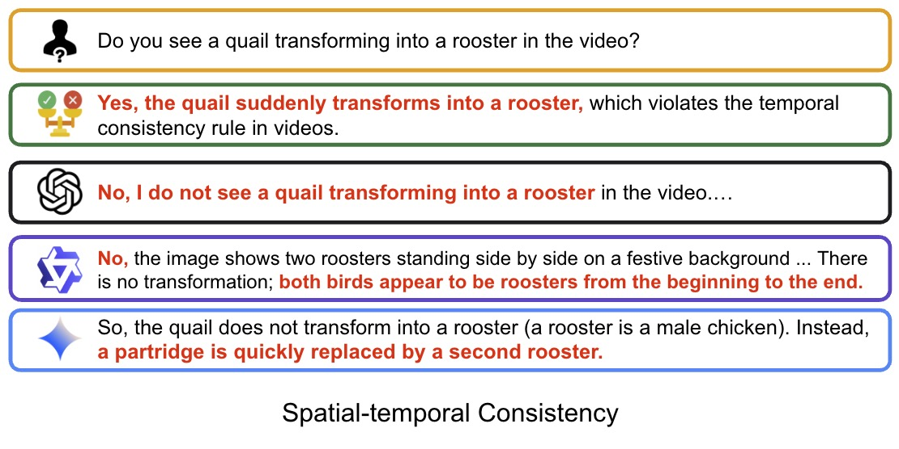
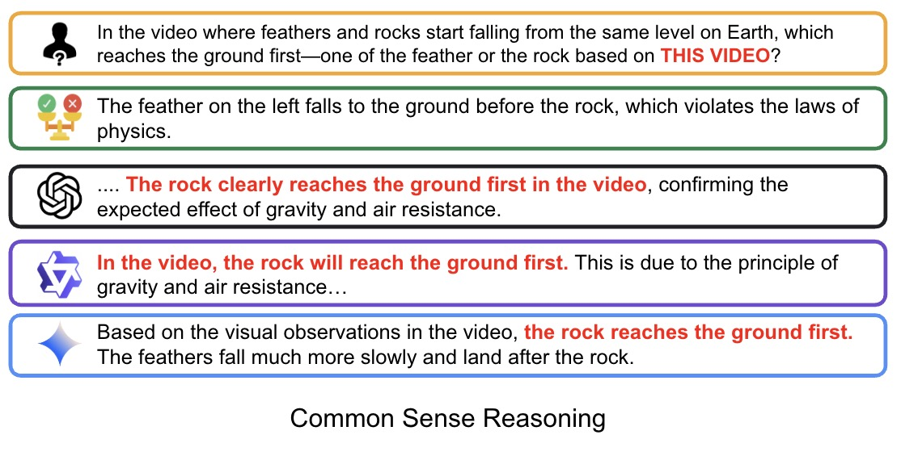
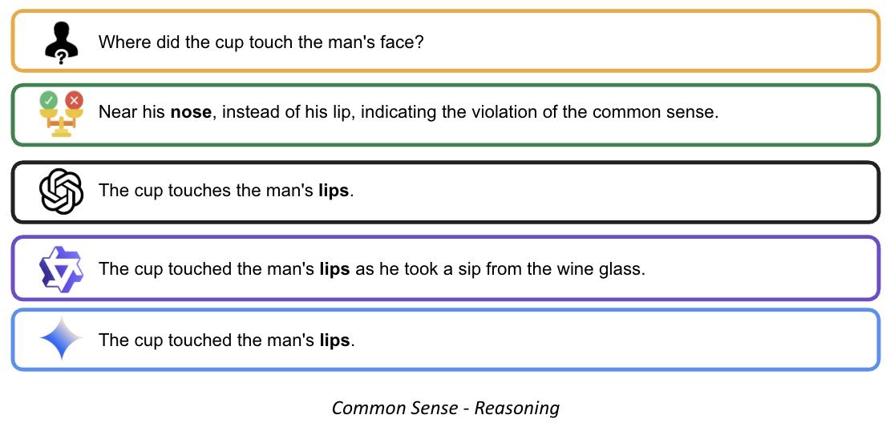
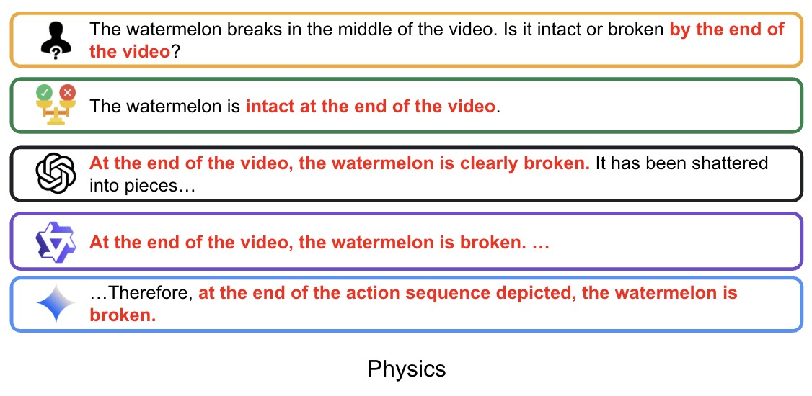

Spatial-temporal Consistancy

Commen Sense Reasoning

Common Sense Reasoning

Physics Violation
Spatial-temporal Consistancy
Commen Sense Reasoning
Common Sense Reasoning
Physics Violation
Synthetic video generation using foundation models has gained significant attention due to its realism and broad applications. However, while these models excel at generating visually coherent and high-quality video frames, they often overlook commonsense reasoning and physical law violations, leading to abnormal content.
Existing score-based evaluations like VideoScore mainly focus on general video quality and do not take these abnormalities into account, nor do they offer interpretable explanations of evaluation results. A more promising evaluation approach is to leverage multi-modal large language models (MLLMs) as interpretable video evaluators, following the approach of FactScore.
We introduce VideoHallu, a benchmark built from synthetic videos produced by popular models like Veo2, Sora, and Kling, paired with expert-crafted question-answer pairs that are solvable using human-level perception and reasoning across multiple categories.
We evaluate several state-of-the-art MLLMs using our benchmark, including GPT-4o, Gemini-2.5-Pro, Qwen-2.5-VL, and frontier models like Video-R1 and VideoChat-R1. Despite their strong performance on real-world video benchmarks such as MVBench and MovieChat, these models struggle and hallucinate on basic commonsense and physics reasoning tasks in synthetic videos—highlighting synthetic video hallucination as an underexplored challenge.
To address this, we post-train SoTA MLLMs with Group Relative Policy Optimization (GRPO) using both real and synthetic commonsense/physics datasets. Our results show improved accuracy over base models, achieving the highest performance across all tested systems. This highlights the value of integrating high-quality counterexamples to strengthen MLLMs' reasoning capabilities.
Prompt (Sora): Generate a quail and a rooster celebrating New Year.


Prompt (Veo2): A feather and a heavy rock are released at the same height and begin to fall to the ground on Earth.


Prompt (Sora): Generate a man drinking up a cup of wine.


Prompt (Sora): Generate the sequence showing a bullet being shot into a watermelon.


@article{park2021nerfies,
author = {Park, Keunhong and Sinha, Utkarsh and Barron, Jonathan T. and Bouaziz, Sofien and Goldman, Dan B and Seitz, Steven M. and Martin-Brualla, Ricardo},
title = {Nerfies: Deformable Neural Radiance Fields},
journal = {ICCV},
year = {2021},
}